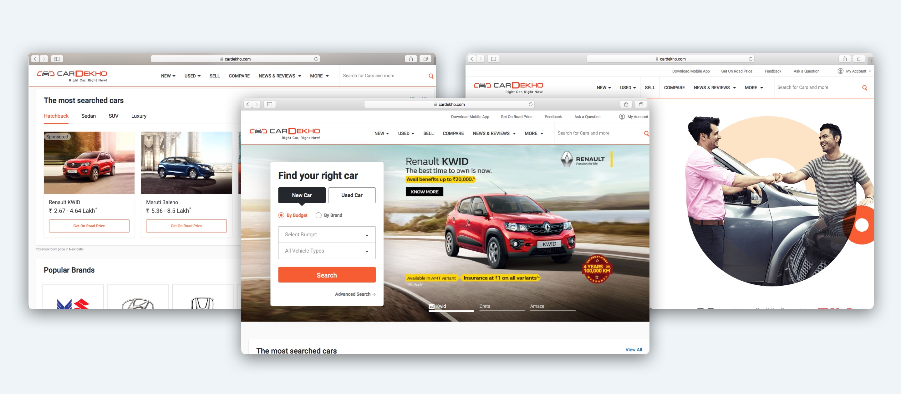
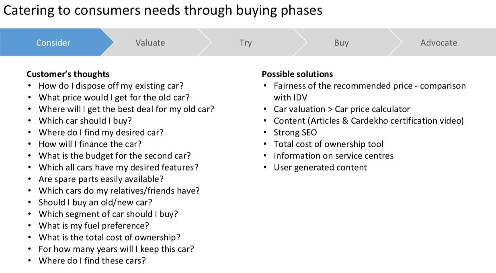
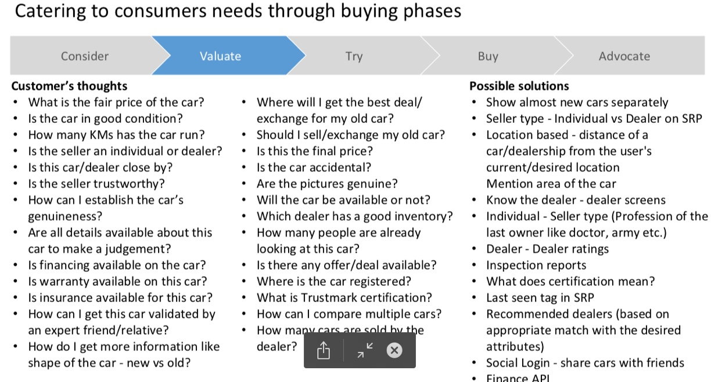
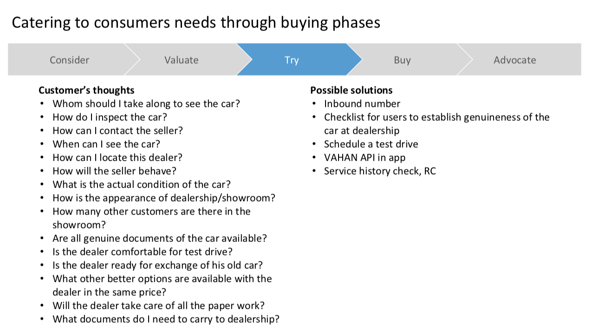
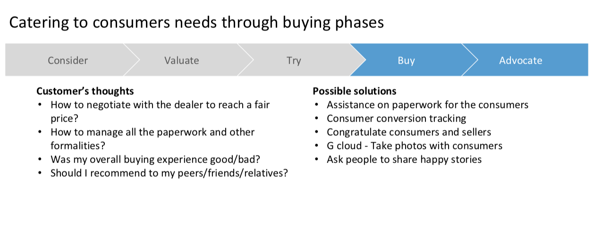
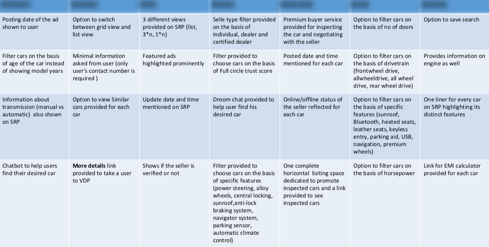
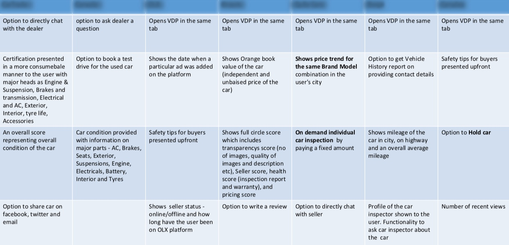
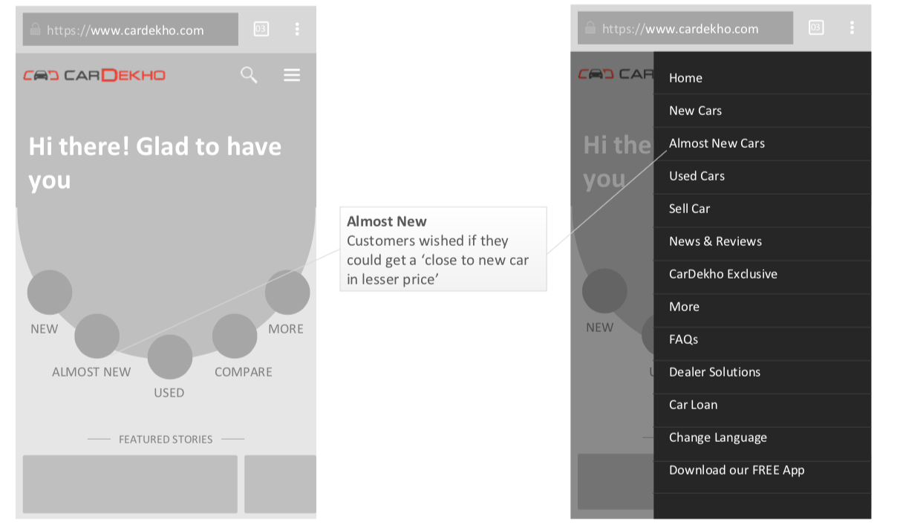
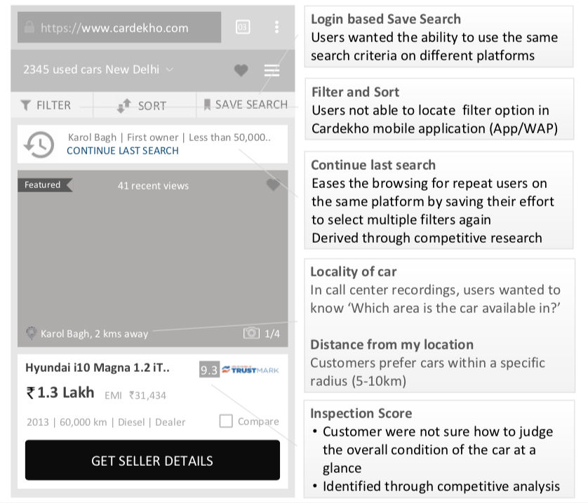
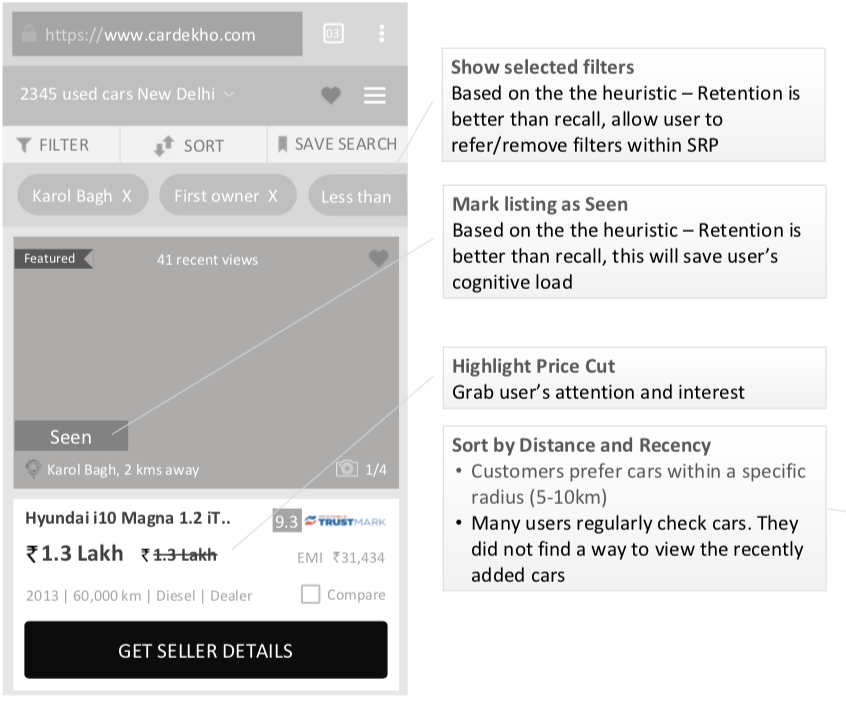

Daily Basis Study
July 2016
Research Interaction Design UI Design Information ArchitectureBACKGROUND
Objective: Cardekho.com is one of India's leading auto portals As the name indicates, the site is all about cars, of literally all genres, that are available in India. The booming auto sector and Cardekho's excellent User Experience has led to an avalanche of auto enthusiasts visiting the site for authentic information about cars of their choice. The site offers information on every possible detail and specification as well as performance metrics of cars, including price in various Indian cities. It is one of the most complete car review and information sites for car fanatics not only in India but also internationally.
Product Preview

Website Overview
THE CHALLENGE
With the booming economy, The main challenge for the site was not just to rank in popular search engines but also to win market confidence as of information on cars. This objective was achieved by establishing a highly effective User Experience to compliment the high quality information that the site offered on cars.With reviews from real users and also from automobile experts, the site also needed to be extremely user-friendly and be well thought of, to ensure visitors remained as long as they didn't get all the information they wanted. It faced strong competition from other sites as well.
Goal
Create highly effective User Experience and quality information.
RESEARCH
Understand the the users need and business goal
To understand the structure of the our business, first we need to understand the needs of the user. We need to understand the customer journey and create the product around its. These needs are convert in to 5 thing
- Emotional Needs - Start with emotion (e.g. need car for a gift on wife birthday, For family, travel to office etc. )
- Functional Needs - Think for buy and sell (e.g. which car new or used, How find a used car, best car for family etc.)
- Discovery Needs - when user try to find (e.g. Condition of car, about specification, colors, how get loan etc.)
- Transaction Needs - Solution of Trasaction query (e.g. How much downpayment, Intrest rate How much RTO fees etc.)
- Post Transaction Needs - e.g. need accesorize for car, Refinancing can happen?, Tips how to maintain etc.

Wireframes of all steps
DEFINE
Catering to consumers needs through buying phases
After analyzing the processes followed by different consumers, we came up with a combined flow with the product managers, Designer, Tech. head. and define the solution of selcted needs.




Research on What different competitors are doing?
Always one eyes on your competitors. We have done research on time to time what, why and how our competitors are doing. This exercise give strength and more ideas to achive our goals.


DESIGN
Wireframes Solutions
All of the research and ideation we are start with solution using the mockups. We identified the issues and needs and mark the pointer as the solutions. All the excercise behind an idea to user friendly and increatse our business target.



Prototypes
Research and process flow led us to create initial sketches where we explored set-up option for dealers, allowing track and followup facilities . We were able to test these ideas with dealers and their feedback led us to our final solution.
REFLECTION
Before starting the project, we was confident that it would be easy to find research participants. However, this turned out to be our biggest challenge. I learned to apply alternate research methods and ask as many questions as possible to the available research participants. Given the wide scope of this new feature, we decided to focus on only the important components.
Next
Some recommendations to take this project forward
- Conduct more usability tests
- Need to rollout and add few more feature